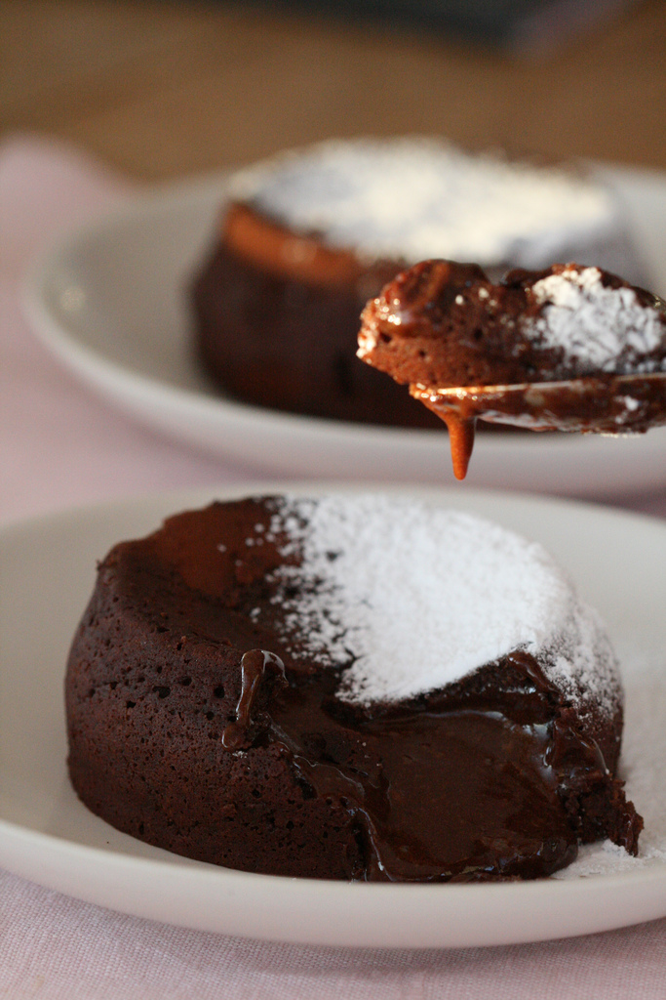

Šokolaadivulkaanid (fondant)

Valmistamine
- Määri nn ramekin-vormid hoolikalt võiga ning puista kakaopulbriga üle. Pane kõrvale.
- Sulata šokolaad ja või väikeses potis. Tõsta pott tulelt.
- Klopi munad suhkruga kohevaks.
- Lisa sulašokolaadi-või segu ning vahusta elektrimikseriga veel 5 minutit.
- Sõelu juurde jahu ja vahusta veel 2 minutit.
- Kalla segu ettevalmistet vormidesse. Küpseta 180kraadises ahjus umbes 10-12 minutit - MITTE ROHKEM!*
- Kummuta taldrikule ning serveeri kohe. Peale võid puistada tuhksuhkrut, kõrvale sobib veidi pehme vaniljejäätis.
Nipid ja soovitused
- Tegelikult oleneb küpsetamisaeg konkreetsest ahjust ja küpsetusvormidest jne jne.
- Retsept on mõeldud KUUE portsjoni jaoks, mina kasutan väikeseid valgeid keraamilisi ramekin-vorme.
- Kui kardad, siis küpseta pigem minut-paar rohkem - halvimal juhul saad lihtsalt šokolaadikoogi, mida nt kirsikompoti või külma vanillijäätisega serveerida.
| Koostisosad |
Kogus |
| Tumedat šokolaadi |
170g |
| Võid |
150g |
| Suhkrut |
160g |
| Nisujahu |
75g |
| Muna (L-suurus) |
4 |